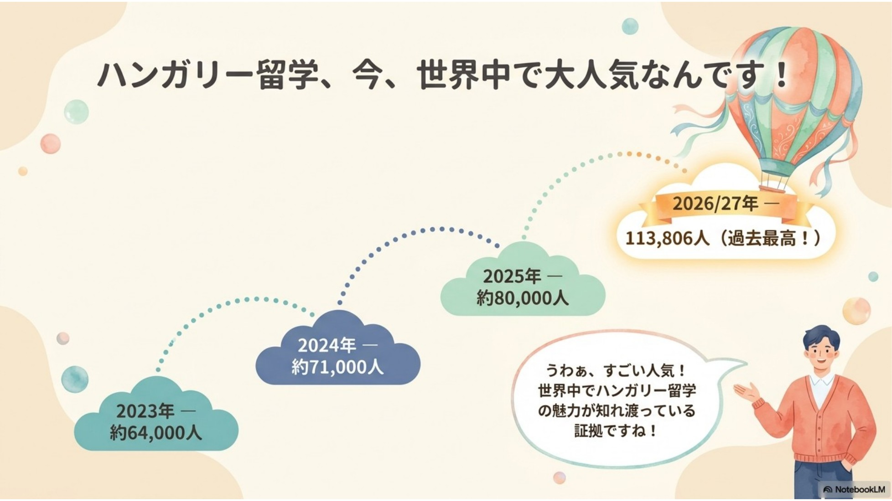
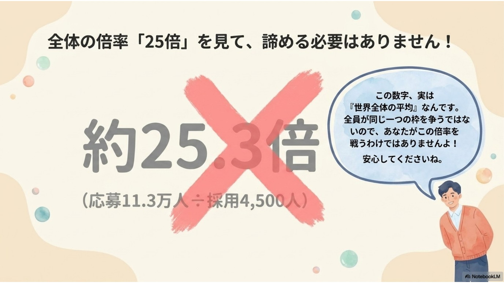
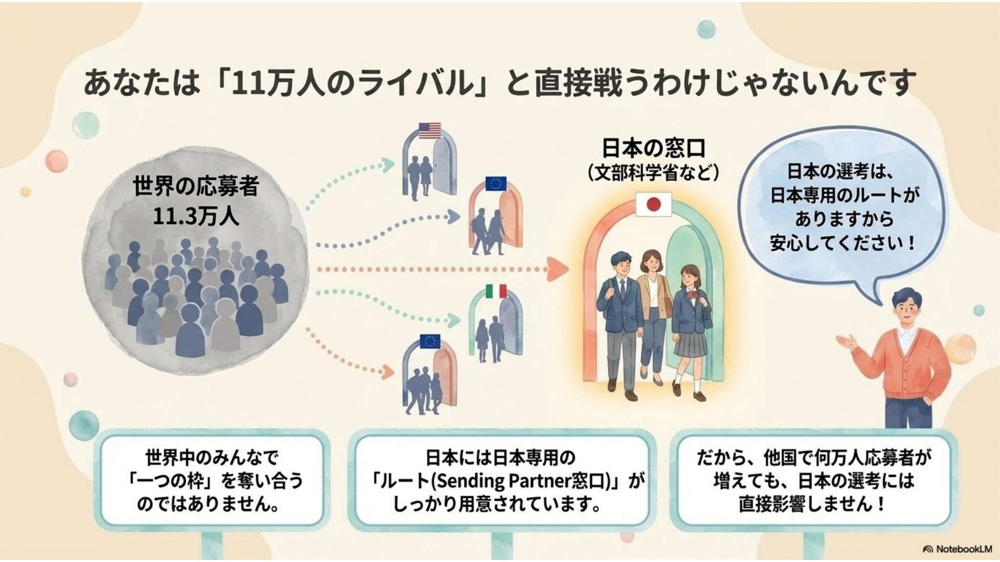
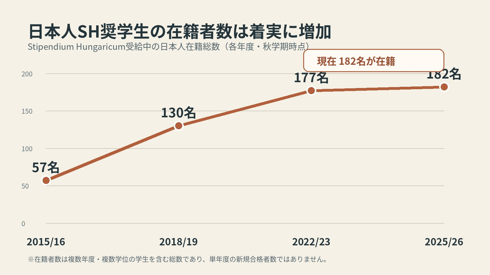
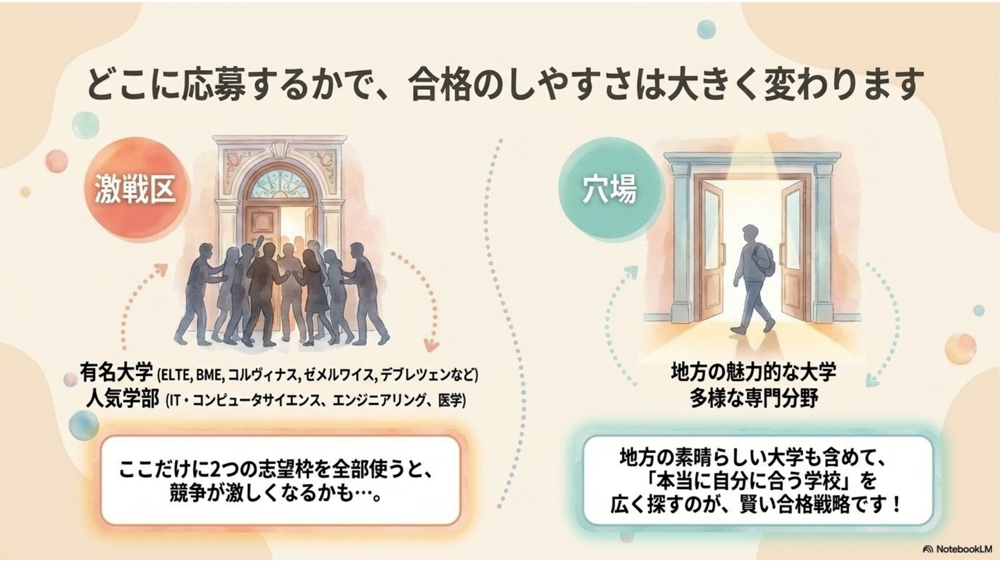
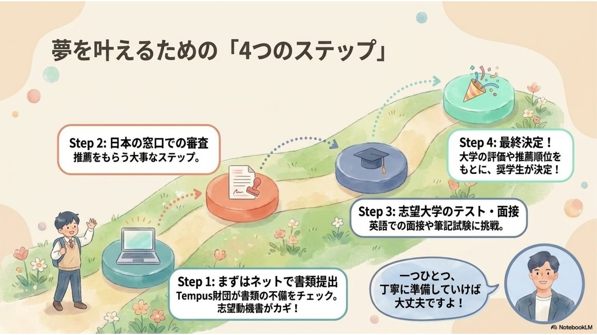
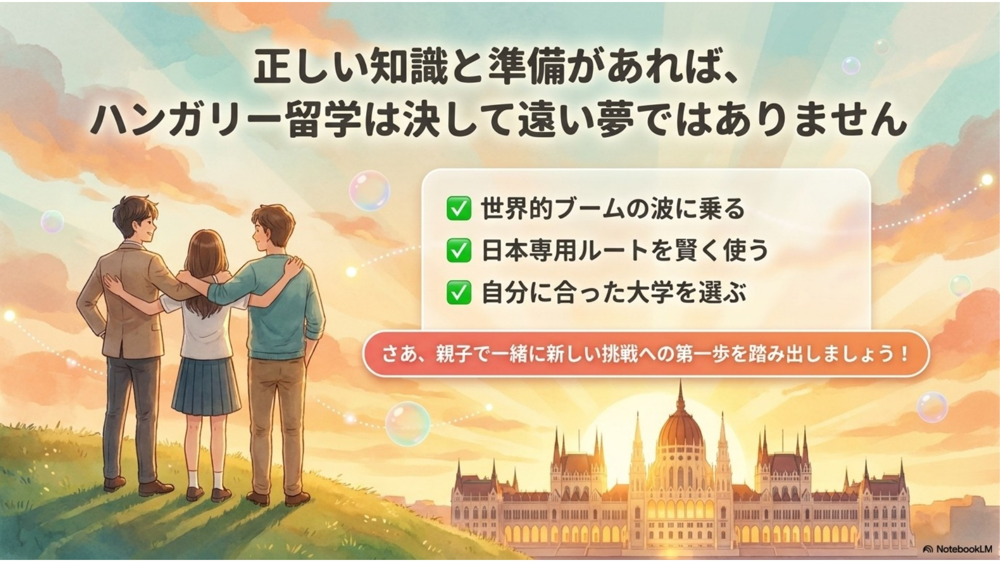

ハンガリー政府奨学金「Stipendium Hungaricum（スティペンディウム・ハンガリカム）」には、世界各国から多くの応募が集まっています。
授業料が原則免除されるほか、毎月の奨学金、学生寮または住居費補助、医療保険などが提供される給付型奨学金であるため、海外大学への進学を考える人にとって非常に魅力的な制度です。
一方で、世界全体の応募数だけを見て「11万人全員と同じ一つの枠を争う」と考えるのは正確ではありません。実際には、各国のSending Partnerによる推薦、大学ごとの入学選考、プログラムごとの受入人数など、複数の要素を通じて選考が行われます。
世界全体では11万件を超える応募
2025年の選考では、世界中から約80,000件の応募があり、4,500人以上に奨学金が授与されたと公式募集要項に記載されています。
さらに、2026/27年度の募集では、過去最多となる113,806件の応募があったと公式サイトが発表しました。応募規模は近年、大きく拡大しています。

単純計算では約18倍
2025年の約80,000件の応募に対し、授与人数が4,500人以上だったことから、単純計算すると約17.8倍です。
ただし、これは世界全体の応募数を世界全体の授与人数で割った参考値です。日本の大学入試のように、全員が同じ大学・学部・採用枠を争った結果を示す厳密な倍率ではありません。
2026/27年度は約25倍になるのか
113,806件の応募に対し、仮に授与人数が2025年と同程度の4,500人だった場合、約25.3倍になります。

全体の倍率をそのまま自分の倍率と考えられない理由
1．国ごとにSending Partnerと応募条件が異なる
スティペンディウム・ハンガリカムでは、多くの国で各国のSending Partnerを通じた推薦が必要です。また、応募できる学位課程や専攻分野は、ハンガリーと各Sending Partnerとの教育協力の内容によって異なります。
そのため、ある国で応募者が大幅に増えても、その増加が日本からの応募者の競争率にそのまま反映されるとは限りません。
考え方の例
A国が100人応募・10人採用なら約10倍、B国が1,000人応募・20人採用なら約50倍です。制度全体の平均が約18倍でも、国ごとの実質的な競争環境は異なる可能性があります。
※国別の正式な応募数・採用人数、日本人だけの合格率は公表されていません。日本人の倍率が必ず18倍より低いと断定することはできません。

2．大学やプログラムごとに選考される
Sending Partnerから推薦された後は、志望大学による書類審査、英語面接、専門面接、筆記試験などが行われます。選考方法は大学・専攻・学位課程によって異なります。
同じ日本人応募者でも、どの大学・専攻へ応募するか、同じプログラムへ何人が集中するかによって、競争環境は変わります。
3．日本人だけの倍率は公表されていない
日本人の正式な倍率を出すには、日本からの応募者数、推薦人数、大学選考通過者数、最終授与人数が必要です。しかし、これらの一連の数字は公表されていません。
日本人SH奨学生の在籍者数は着実に増加
一方、ハンガリー教育局の統計からは、Stipendium Hungaricumを受給してハンガリーの大学に在籍する日本人学生の総数を確認できます。
日本人SH奨学生の在籍総数は、2015/16年度の57名から2025/26年度の182名へ増加しました。約10年間で3倍を超える規模となっており、長期的には着実に増加しています。
| 年度 | 日本人SH奨学生の在籍総数 |
|---|---|
| 2015/16年度 | 57名 |
| 2018/19年度 | 130名 |
| 2022/23年度 | 177名 |
| 2025/26年度 | 182名 |

公開データから年間の新規採用人数を概算すると
日本人の単年度の採用人数は公表されていません。ただし、世界全体で在籍するSH奨学生10,742名の課程別構成を、日本人の在籍総数182名にも当てはめると仮定し、一般的な修業年数で割ることで、年間の新規採用人数のおおよその目安を試算できます。
| 課程 | 日本人182名への換算 | 想定修業年数 | 年間新規採用の概算 |
|---|---|---|---|
| 学士 | 約74名 | 3.5年 | 約21名 |
| 修士 | 約47名 | 2年 | 約24名 |
| 博士 | 約35名 | 4年 | 約9名 |
| 一貫制課程 | 約19名 | 5年 | 約4名 |
| その他 | 約7名 | 1年 | 約7名 |
| 年間新規採用人数の合計目安 | 約65名 | ||
年間約60〜70名が一つの目安
上記の単純試算では、日本人の新規採用人数は年間約65名となります。修業年数や実際の日本人の課程構成には幅があるため、記事上は「年間およそ60〜70名程度の可能性」と捉えるのが適切です。
※この試算は、世界全体の課程別構成が日本人にも同程度当てはまると仮定した概算です。日本人だけの課程別在籍者数、休学・退学・留年・修了時期などは公表されていないため、実際の年間採用人数とは異なる可能性があります。また、この推計だけでは日本人の倍率は計算できません。
4．人気大学・人気専攻への集中が起こる
日本人全体の応募者数が多くなくても、ELTE、BME、デブレツェン大学、コルヴィナス大学、ゼンメルワイス大学など、知名度の高い大学へ志望が集中すれば、その応募先では競争が激しくなる可能性があります。
Computer Science、Engineering、Medicineなどの人気分野も同様です。一方で、地方大学や専門性の高いプログラムまで選択肢を広げると、自分の経歴に合う応募先が見つかる場合があります。

「国籍の多様性で日本人が有利」と断定してよいのか
スティペンディウム・ハンガリカムは、ハンガリーの高等教育の国際化や参加国との教育・文化交流を目的とする制度です。
ただし、この目的があることと、大学が非公開の国籍枠を設けて合格者数を調整していることは別です。公開募集要項からは、日本人に何人の枠があるか、国籍バランスを採否へどう反映するかといった具体的な基準は確認できません。
正確な表現
国ごとの応募状況や推薦の仕組みが異なるため、実質的な競争率も国によって異なる可能性があります。ただし、日本人が多様性の観点から有利になるとは断定できません。
応募から奨学金決定までの選考フロー
- オンライン応募：成績証明書、語学力証明、志望動機書などを提出
- Sending Partnerによる審査・推薦：推薦されなければ、原則として大学選考へ進まない
- 大学の入学選考：書類、面接、筆記試験などで入学基準を確認
- 最終的な奨学金割当て：大学評価、推薦順位、利用可能な枠などを踏まえて決定

倍率より重要な4つの出願戦略
1．自分の経歴に合ったプログラムを選ぶ
必要な学歴、履修科目、英語スコア、専門知識、入学試験の内容を確認し、自分のバックグラウンドと合うプログラムを選びます。
2．2つの志望先を戦略的に組み合わせる
大学名だけで選ばず、カリキュラム、入学条件、試験形式、自分の学歴との相性を比較します。大学別の正式倍率が非公表である以上、絶対的な安全校はありません。
3．志望動機書を具体的にする
なぜハンガリーなのか、なぜその大学・専攻なのか、過去の経験とどうつながるのか、卒業後にどう生かすのかを一貫して説明します。
4．大学ごとの面接・試験に備える
英語面接、専門科目の口頭試験、数学・物理の筆記試験、録画面接など、志望プログラムの選考形式を早めに確認して対策します。
まとめ
2025年の数字を単純計算すると約17.8倍、2026/27年度の応募数に2025年と同程度の授与人数を当てはめると約25.3倍です。
しかし、これらは制度全体の参考値であり、日本人だけの倍率でも、特定の大学・専攻の倍率でもありません。各国のSending Partner、大学選考、プログラム別の受入状況によって、実際の競争環境は変わります。
世界全体の数字だけを見て諦める必要はありません。一方で、「日本人は少ないから簡単」と考えるのも危険です。自分に合った応募先を選び、2つの志望先を慎重に組み合わせ、書類・面接・試験の準備を進めることが重要です。

本記事の数値に関する注意
「約17.8倍」は、2025年の約80,000件の応募と4,500人の授与人数をもとにした単純計算です。
「約25.3倍」は、2026/27年度の113,806件の応募に対し、授与人数が2025年と同程度の4,500人だったと仮定した試算です。
いずれも、日本人の正式な合格倍率や、特定の大学・プログラムの倍率を示すものではありません。
自分に合った大学選びや出願準備で迷ったら
ハンガリー留学ラボでは、志望大学・学部に在籍する現役日本人留学生へ直接相談できます。大学選びや面接形式、出願準備について実体験をもとに相談可能です。
現役留学生に相談する参考資料・出典
- Stipendium Hungaricum, Call for Applications 2026/2027（Bachelor’s, Master’s, one-tier master’s）
- Stipendium Hungaricum, More Applicants than Ever in the 2026/27 Application Period!
- Stipendium Hungaricum, Call for Applications – Doctoral Programmes 2026/2027
- Tempus Public Foundation, Stipendium Hungaricum Scholarship Holders’ Expectations and Attitudes（2018）
- Tempus Public Foundation / Stipendium Hungaricum 統計資料（日本人SH奨学生の在籍者数、全体の課程別在籍者数）